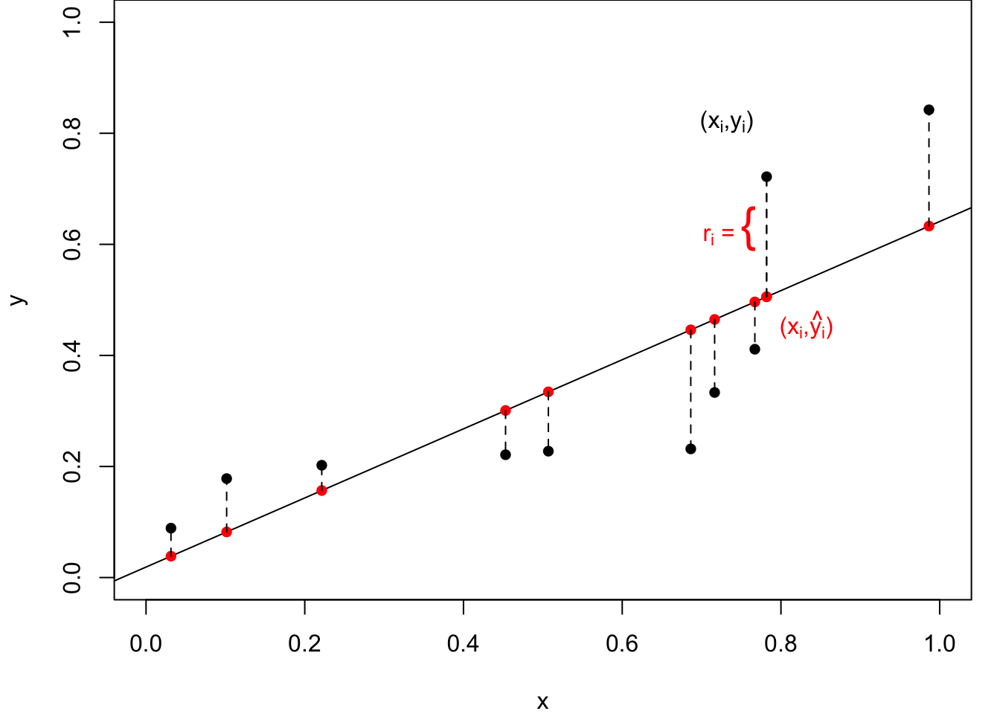
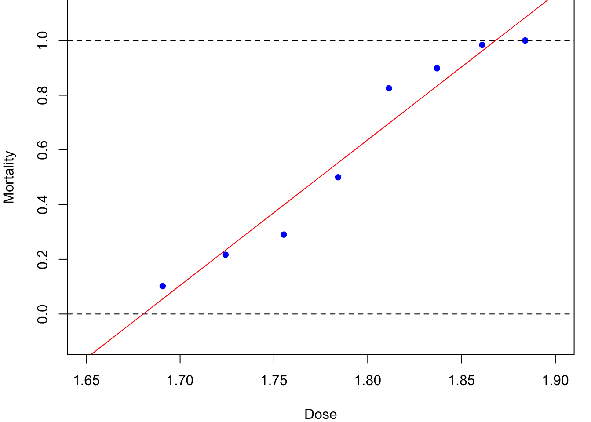
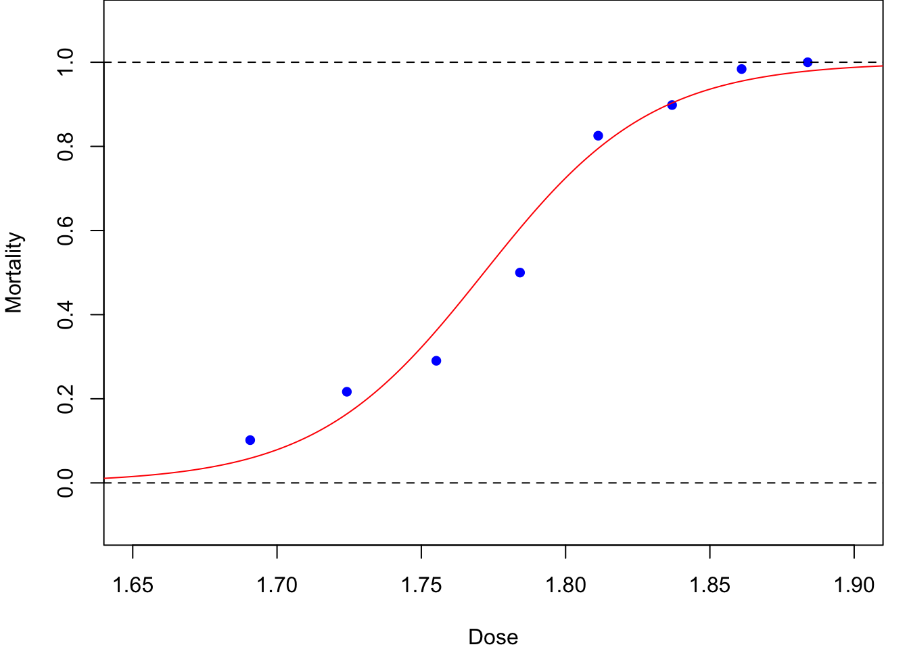
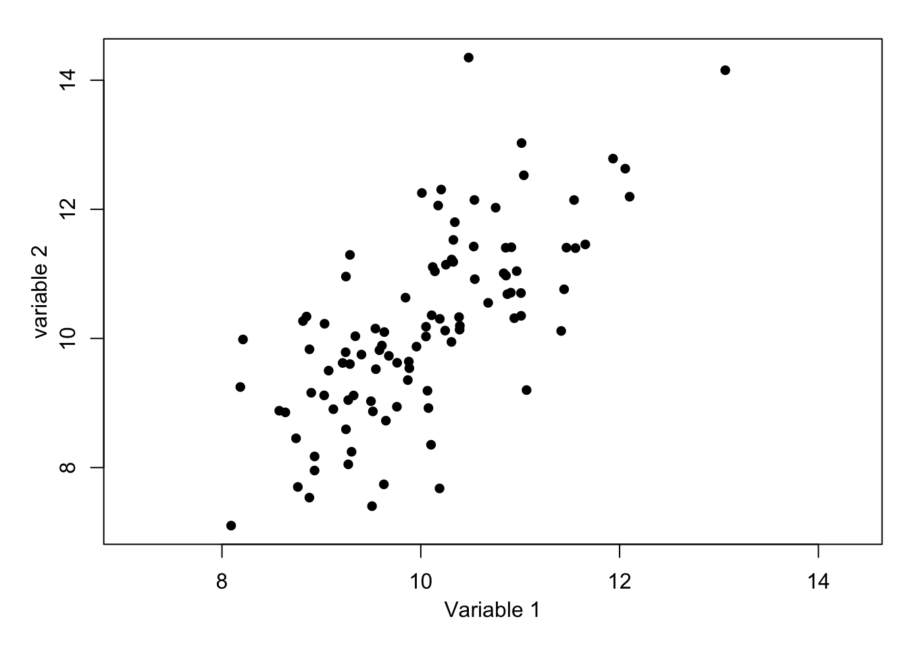
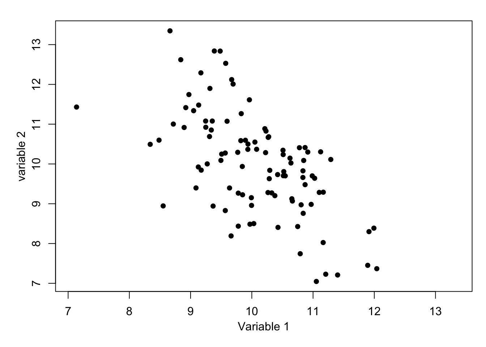
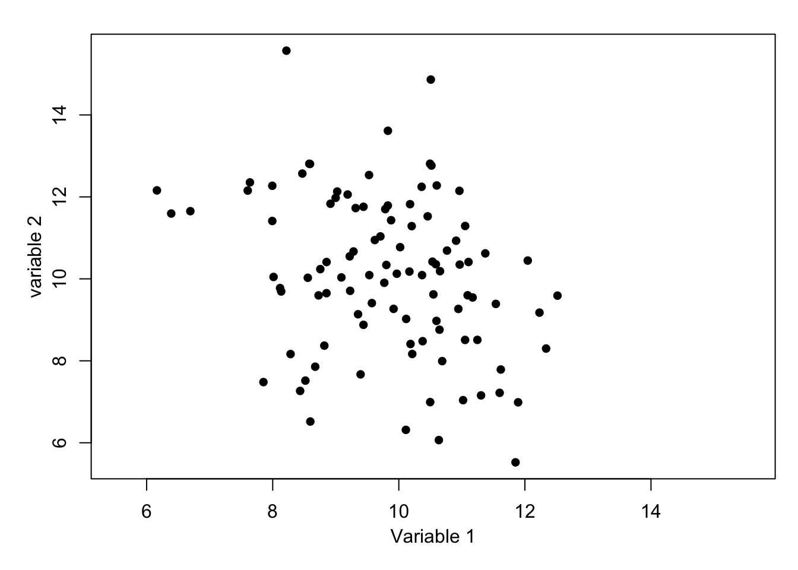
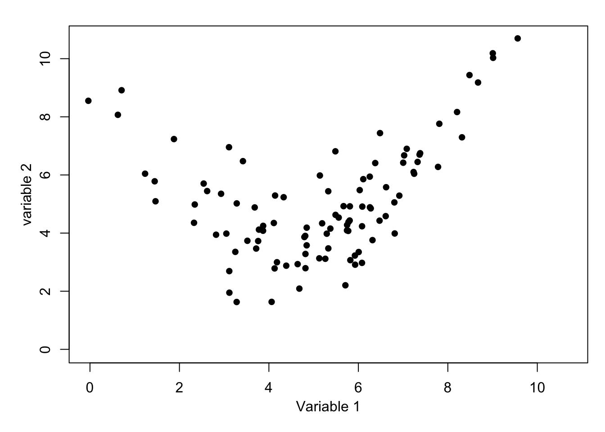
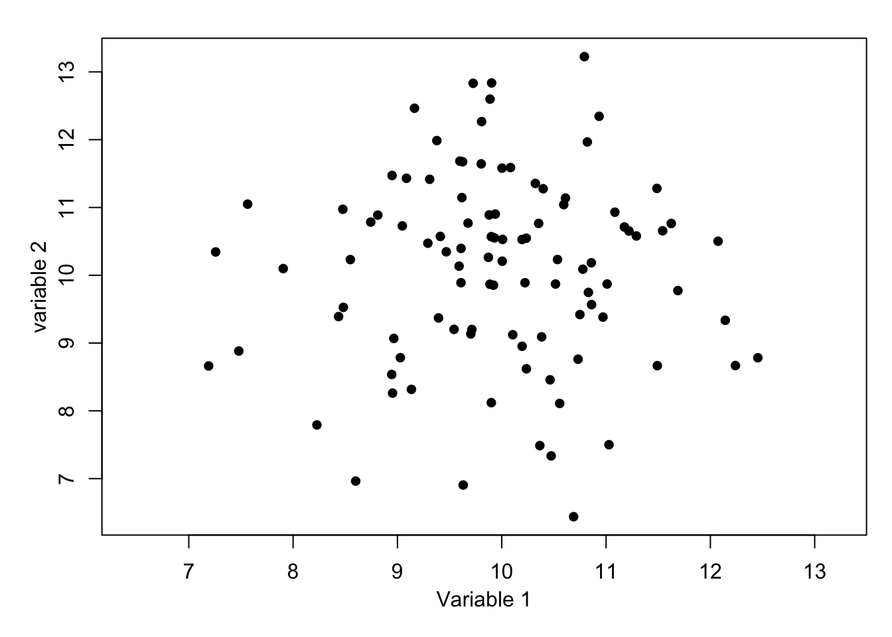
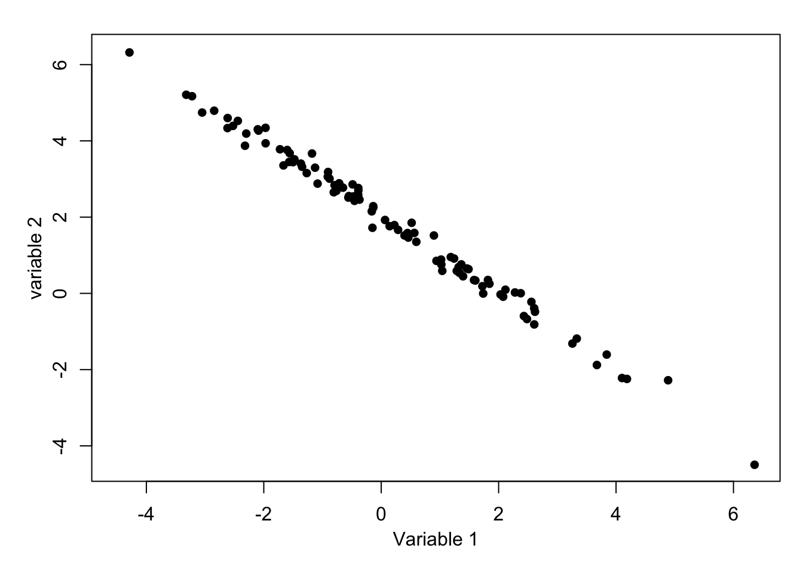

1 Introduction
\[ \def\b#1{\mathbf{#1}} \]
1.1 Overview
In previous modules you have studied linear models with a normally distributed error term, such as simple linear regression, multiple linear regression and ANOVA for normally distributed observations. In this module we will study generalised linear models.
Outline of the module:
- Revision of linear models with normal errors.
- Introduction to generalised linear models, GLMs.
- Logistic regression models.
- Loglinear models, including contingency tables.
Important
This module will make extensive use of \(\mathbf{R}\) and hence it is very important that you are comfortable with its use. If you need some revision, then material is available on the website for the 1st year module MATH1710: https://mpaldridge.github.io/math1710/R.html
The purpose of a generalised linear model is to describe the dependence of a response variable \(y\) on a set of \(p\) explanatory variables \(\b{x}=(x_1, x_2, \ldots, x_p)\) where, conditionally on \(\b{x}\), observation \(y\) has a distribution which is not necessarily normal. Note that the normal distribution situation is a special case of the general framework and we will study that in the next Chapter.
Please be aware that in this learning material we may use lowercase letters, for example \(y\) or \(y_i,\) to denote both observed values or random variables, which is being considered should be clear from the context.
Important
This module will make extensive use of many basic ideas from statistics. If you need some revision, then see Appendix A: Basic material on Minerva under Basic Pre-requisite Material.
1.2 Motivating example
Table 1.1 shows data1 on the number of beetles killed by five hours of exposure to 8 different concentrations of gaseous carbon disulphide.
Dose \(x_i\) |
No. of beetle \(m_i\) |
No. killed \(y_i\) |
|---|---|---|
| 1.6907 | 59 | 6 |
| 1.7242 | 60 | 13 |
| 1.7552 | 62 | 18 |
| 1.7842 | 56 | 28 |
| 1.8113 | 63 | 52 |
| 1.8369 | 59 | 53 |
| 1.8610 | 62 | 61 |
| 1.8839 | 60 | 60 |
Figure 1.1 (a) shows the same data with a linear regression line superimposed. Although this line goes close to the plotted points, we can see some fluctuations around it. More seriously, this is a stupid model: it would predict a mortality rate of greater than 100% at a dose of 1.9 units, and a negative mortality rate at 1.65 units!
Code
par(mar=c(4,4,0,1))
beetle = read.table("https://richardpmann.com/MATH3823/Datasets/beetle.txt", header=T)
dose = beetle$dose
mortality = beetle$died/beetle$total
plot(dose, mortality, pch=16, col="blue",
xlim=c(1.65, 1.90), xlab ="Dose",
ylim=c(-0.1, 1.1), ylab="Mortality")
abline(h=c(0,1), lty=2)
# Fit a linear model
lm.fit = lm(mortality ~ dose)
abline(lm.fit, col="red")
# Fit a logisitc model
plot(dose, mortality, pch=16, col="blue",
xlim=c(1.65, 1.90), xlab ="Dose",
ylim=c(-0.1, 1.1), ylab="Mortality")
abline(h=c(0,1), lty=2)
y = cbind(beetle$died, beetle$total-beetle$died)
glm.fit = glm(y ~ dose, family=binomial(link='logit'))
output.dose = seq(1.6,1.95,0.001)
fitted = predict(glm.fit, data.frame(dose=output.dose), type="response")
lines(output.dose, fitted, col="red")


A more sensible dose–response relationship for the beetle mortality data might be based on the logistic function (to be defined later), as plotted in Figure 1.1 (b). The resulting curve is a closer, more-sensible, fit. Later in this module we will see how this curve was fitted using maximum likelihood estimation for an appropriate generalised linear model.
This is an example of a dose-response experiment which are widely used in medical and pharmaceutical situations.
Warning
Warning of potentially sensitive material. For further information on dose-response experiments see, for example, www.britannica.com/science/dose-response-relationship.
Focus on correlation quiz
Test your knowledge recall and comprehension to reinforce idea of linear relationships and correlation.
For each situation, choose one of the following statements which you think is most likely to apply.
The diastolic blood pressure and the weight of patients attending a heart health clinic at the Leeds General Infirmary.
The daily stock market closing prices of British Telecom and Virgin Media shares on the London Stock Exchange.
The daily rainfall and hours of sunshine collected at a weather monitoring station in the Pennines of Yorkshire.
The number of road accidents occurring at a busy roundabout and the UK Retail Prices Index.
It is well documented that people who are over-weight (or at least high BMI) are more likely to have high blood pressure. This is true for systolic and diastolic blood pressure as well as for men and women. It is not certain if the relationship will be linear, but it will lead to a strong positive correlation value. This is likely to be a causal relationship, excess weight causes high blood pressure.
Although these two companies are in the same business sectors, technology and entertainment, it is unlikely that direct competition will be the main factor in the relative behaviour – if it were, then we might expect a negative correlation, that is one does well if the other does badly. Instead, they are both likely to be driven by the same economic and social trends. This is not a causal relationship but both are being driven by an (unseen) third variable. It does, however, lead to a correlation.
Although both weather features, rainfall and sun, can happen at the same time – perhaps leading to a rainbow – and there are very many cases when neither occurs – for example a cloudy but dry day – there is a general pattern that it will not rain when it is sunny and it will not be sunny when it rains. This leads to a negative correlation and a moderate value is likely even if the relationship is not linear. Again, this is not a causal relationship but is being driven, perhaps, by the presence of clouds.
It is hard to imagine that there will be a relationship between the number of road accidents and an inflation measure, hence a value of correlation close to zero – though do not expect to ever get a value of exactly zero. It is not completely, inconceivable that the number of road accidents will be higher when the economy is active, but this is unlikely to lead to a substantial correlation value – if you know otherwise, let me know!
From each of the following scatter plots, choose from the drop down list which correlation value is most likely.
- What is the most likely correlation for the data below? 6. What is the most likely correlation for the data below? 7. What is the most likely correlation for the data below? 8. What is the most likely correlation for the data below? 9. What is the most likely correlation for the data below? 10. What is the most likely correlation for the data below? 
Imagine dividing the plot by horizontal and vertical lines at the respective mean values. There would be a majority of points in the top-right and bottom-left indicating a positive correlation, but there are still some on the other quadrants. Hence, +1 is too high and 0.3 is too low, but would be suitable if the points were closer to a line or more dispersed, respectively. For information, the exact value is 0.70.
Again, imagine dividing the plot by horizontal and vertical lines at the respective mean values. This time the majority of points would be in the top-left and bottom-right quadrants, and there is moderate spread. A value -1 is too extreme and -0.3 is too close to zero, but would be suitable if the points were closer to a line or more dispersed, respectively. For information, the exact value is -0.60.
A similar situation to Question 6, but there is noticeably more spread. Although the majority of points are in the top-left and bottom-right quadrants there are substantial numbers in the other quadrants. It would be inaccurate to say that this shows uncorrelated variables as there is a definite negative slope to the pattern. For information, the exact value is -0.30.
This is a difficult one as there is a clear relationship, but it is quadratic rather than linear. For information, the exact value is 0.30. Perhaps without the accompanying graph, this correlation value would be misleading.
Dividing the plot by horizontal and vertical lines at the respective mean values leaves very similar numbers of points in al four quadrants. This indicates that the correlation will be close to zero – here is no relationship. For information, the exact value is 0.01.
Almost all of the points are in the top-left and bottom-right quadrants indicating a negative correlation. The points are very close to the linear and hence a value close to -1 is likely – such extreme cases are rare. For information, the exact value is -0.995.
1.3 Revision of least-squares estimation
Suppose that we have \(n\) paired data values \((x_1, y_1),\dots, (x_n, y_n)\) and that we believe these are related by a linear model
\[ y_i = \alpha+\beta x_i +\epsilon_i \]
for all \(i\in \{1, 2,\dots,n\}\), where \(\epsilon_1,\dots,\epsilon_n\) are independent and identically distributed (iid) with \(\mbox{E}[\epsilon_i]=0\) and \(\mbox{Var}[\epsilon_i]=\sigma^2\). The aim will be to find values of the model parameters, \(\alpha, \beta \text{ and } \sigma^2\) using the data. Specifically, we will estimate \(\alpha\) and \(\beta\) using the values which minimize the residual sum of squares (RSS)
\[ RSS(\alpha, \beta) = \sum_{i=1}^n \left(y_i-(\alpha+\beta x_i)\right)^2. \tag{1.1}\]
This measures how close the data points are around the regression line and hence the resulting estimates, \(\hat\alpha\) and \(\hat\beta\), will give us a fitted regression line which is closest to the data.
Figure 1.2 illustrates this process. The data points are fixed but we are free to choose values for \(\alpha\) and \(\beta\), that is to move the line up and down and to rotate it as needed. In general, the data points, however, do not sit exactly on any line. For any values of \(\alpha\) and \(\beta\) the value on the line \(y=\alpha+\beta x\) can be calculated and the discrepancy, as measured in the vertical direction, is defined as the residual, \(r_i=y_i-\left(\alpha+\beta x_i\right)\). Then, the residual sum of squares is formed as the sum of the squares of these individual residuals.
It can be shown that Equation 1.1 takes its minimum when the parameters are given by
\[ \hat\alpha = \bar y -\hat\beta\bar x, \quad \mbox{and} \quad \hat\beta = \frac{s_{xy}}{s^2_x} \tag{1.2}\]
where \(\bar x\) and \(\bar y\) are the sample means,
\[ s_{xy}=\frac{1}{n-1}\sum_{i=1}^n (x_i-\bar x)(y_i-\bar y) \]
is the sample covariance and
\[ s^2_x = \frac{1}{n-1} \sum_{i=1}^n (x_i-\bar x)^2 \]
is the sample variance of the \(x\) values. It can be shown that these estimators are unbiased, that is \(\mbox{E}[\hat\alpha]=\alpha\) and \(\mbox{E}[\hat\beta]=\beta\) – see Section 1.5.
The fitted regression lines is then given by \(\hat y = \hat \alpha +\hat \beta x\), the fitted values by \(\hat y_i = \hat \alpha +\hat \beta x_i\), and the model residuals by \(r_i= \hat \epsilon_i= y_i-\hat y_i\) for all \(i\in \{1,\dots,n\}.\)
To complete the model fitting, we also estimate the error variance, \(\sigma^2\), using \[ \hat \sigma^2 = \frac{1}{n-2} \sum _{i=1}^n r_i^2. \tag{1.3}\]
Note that, by construction, \(\bar r=0\) and, further, it can be shown that \(\hat \sigma^2\) is an unbiased estimator of \(\sigma^2\), that is \(\mbox{E}[\hat\sigma^2]=\sigma^2\).
Code
xbar = mean(dose)
ybar = mean(mortality)
s2x = var(dose)
sxy = cov(dose, mortality)
betahat = sxy/s2x
alphahat = ybar-betahat*xbar
s2hat = sum((mortality-alphahat-betahat*dose)^2)/(length(dose)-2)Returning to the above beetle data example, we have \(\hat\alpha=\)-8.947843, \(\hat\beta=\) 5.324937, and \(\hat \sigma^2 =\) 0.0075151.
We will interpret the output later, but in \(\b{R}\), the fitting can be done with a single command with corresponding fitting output from a second command:
Code
lm.fit = lm(mortality ~ dose)
summary(lm.fit)
Call:
lm(formula = mortality ~ dose)
Residuals:
Min 1Q Median 3Q Max
-0.10816 -0.06063 0.00263 0.05119 0.12818
Coefficients:
Estimate Std. Error t value Pr(>|t|)
(Intercept) -8.9478 0.8717 -10.27 4.99e-05 ***
dose 5.3249 0.4857 10.96 3.42e-05 ***
---
Signif. codes: 0 '***' 0.001 '**' 0.01 '*' 0.05 '.' 0.1 ' ' 1
Residual standard error: 0.08669 on 6 degrees of freedom
Multiple R-squared: 0.9524, Adjusted R-squared: 0.9445
F-statistic: 120.2 on 1 and 6 DF, p-value: 3.422e-05
Important
You should have met \(\b{R}\) output like this in previous statistics modules, but if you need some revision then see Appendix-C: Background to Analysis of Variance on Minerva under Basic Pre-requisite Material.
1.4 Types of variables
The way a variable enters a model will depends on its type. The most common five types of variable are:
- Quantitative
- Continuous: for example, height; weight; duration. Real valued. Note that although recorded data is rounded it is still usually best regarded as continuous.
- Count (discrete): for example, number of children in a family; accidents at a road junction; number of items sold. Non-negative and integer-valued.
- Qualitative
- Ordered categorical (ordinal): for example, severity of illness (Mild/ Moderate/Severe); degree classification (first/ upper-second/ lower-second/ third).
- Unordered categorical (nominal):
- Dichotomous (binary): two categories: for example sex (M/ F); agreement (Yes/ No); coin toss (Head/ Tail).
- Polytomous (also known as polychotomous): more than two categories: for example blood group (A/ B/ O); eye colour (Brown/ Blue/ Green).
Note that although dichotomous is clearly a special case of polytomous, making the distinction is usually worthwhile as it often leads to a simplified modelling and testing approach.
Focus on data type quiz
Test your knowledge recall and comprehension to reinforce ideas ready for later in the module
For each of the following situations what is the most appropriate data type: nominal, ordinal, discrete, or continuous?
The eye colour of 100 patients visiting the Yorkshire Cancer Research Centre, for example, grey, green, brown, blue….
The nationality of students at the University of Leeds, for example, British, Chinese, Greek, Indian….
The five-star ratings submitted by 50 customers on TripAdvisor for the Leeds Queens Hotel, for example 1 star, 2 star,… 5 star.
The diastolic blood pressure of 20 male and 20 female patients attending a heart health clinic at the Leeds General Infirmary in a study to investigate differences between men and women, for example, 80 mm Hg, 130 mm Hg,…
The daily stock market closing price of British Telecom shares on the London Stock Exchange over a year to study the change over time, for example, 114.75p, 115.10p,…
The January monthly rainfall collected since 1961 at a weather monitoring station in the Pennines of Yorkshire, for example, 8 mm , 12 mm,…
The level of satisfaction of 100 randomly chosen voters with the policies of a political party, for example, agree, fully agree, neither agree nor disagree, disagree, and fully disagree.
The number of new people following the TheRoyalFamily twitter page per day over a year, for example 459, 700,… to study the change due to a royal wedding.
The number of road accidents occurring per month, at a busy roundabout over a 10-year period to study the change over time, for example, 0, 1, 2,…
The number of Scottish strawberries in 50 randomly selected boxes bought from ASDA supermarket, for example, 50, 58, 68,…
- Eye colour is qualitative and can take any one of an unordered set of categories. Although the eye colours are categories, there is no clear ordering to the colours.
- Nationality is qualitative and can take any one of an unordered set of categories. Although the nationality are categories, there is no clear ordering to the countries.
- The rating is qualitative and can take any one of set of categories but the categories are clearly ordered, 5 star is better than 4 start etc. Although the ratings are represented by integers, there is no reason why the difference between 1 and 2 stars has the same interpretation as between 4 and 5 stars and hence it cannot be discrete.
- Although the recorded values might take only integer values, blood pressure is a measurement and could take be any real number.
- Share price is a measurement and could be any real number, even though in practice it will be rounded.
- Rainfall is a measurement and although the recorded values might take only integer values, rainfall could be any real number.
- Satisfaction score is qualitative and can take any one of set of categories but the categories are clearly ordered, fully agree is better than agree etc. Although the scores could be represented by numerical values, e.g. 1,2,3,4,5, there is no reason why the difference between 1 and 2 has the same interpretation as between 4 and 5 and hence it is not discrete.
- The number of people is a quantitative count which is limited to the non-negative integers. The variable is discrete.
- The number of accidents is a quantitative count, being limited to the non-negative integers and hence is discrete.
- The number of strawberries is a quantitative a count which is limited to the non-negative integers. The variable is discrete.
1.5 Exercises
Important
Unless otherwise stated, data files will be available online at: richardpmann.com/MATH3823/Datasets/filename.ext, where filename.ext is the stated filename with extension. For example, for the first exercise:
beetle = read.table(“https://richardpmann.com/MATH3823/Datasets/beetle.txt”, header=T)
1.1 Consider again the beetle data in Table 1.1. Perform the calculations by hand and then check the answers using \(\b{R}\) – a copy of the data is available in the file beetle.txt. Finally plot the fitted regression line on a scatter plot of the data.
Plot the data to check that a linear model is suitable and then fit a linear regression model. Do you think that the fitted model can be reliably used to predict the values of \(y\) when \(x=5\) and \(x=10\)? Justify your answers.
1.3 Starting from Equation 1.1, derive the estimation equations given in Equation 1.2. Show that \(\hat\alpha\) and \(\hat\beta\) are unbiased estimators of \(\alpha\) and \(\beta\). What can be said about \(\hat\sigma^2\) as an estimator of \(\sigma^2\)?
See the code chunk used to produce Figure 1.1.
1.2 Consider the following synthetic data:
| \(i=1\) | \(i=2\) | \(i=3\) | \(i=4\) | \(i=5\) | \(i=6\) | \(i=7\) | \(i=8\) | |
|---|---|---|---|---|---|---|---|---|
| \(x_i\) | -1 | 0 | 1 | 2 | 2.5 | 3 | 4 | 6 |
| \(y_i\) | -2.8 | -1.1 | 7.2 | 8.0 | 8.9 | 9.2 | 14.8 | 24.7 |
Which is more reliable prediction for a value within the range of the data (interpolation) or outside the range of the data (extrapolation)?
For unbiasedness of intercept and slope check your MATH1712 lecture notes. For the latter, there is a careful theoretical proof about the variance parameter, but here only an intuitive explanation is expected.
1.4 The Brownlee’s Stack Loss Plant Data2 is already available in \(\mathbf{R}\), with background details on the help page, \(\texttt{?stackloss}\).
After plotting all pairs of variables, which of \(\texttt{Air.Flow}\), \(\texttt{Water.Temp}\) and \(\texttt{Acid.Conc}\) do you think could be used to model \(\texttt{stack.loss}\) using a linear regression? Justify your answer.
Perform a simple linear regression with using \(\texttt{stack.loss}\) as the response variable and your chosen variable as the explanatory variable. Add the fitted regression line to a scatter plot of the data and comment.You already met this example in MATH1712 – check your lecture note for guidance.
1.5 In an experiment conducted by de Silva et al. in 20203 data was obtained to investigate falling objects and gravity, as first consider by Galileo and Newton. A copy of the data is available in the file physics_from_data.csv.
Suppose that we wish to develop a method to predict the maximum Reynolds number from a single explanatory variable. Which of the variables do you think helps explain Reynolds number the best? Why do you think this?Read the data into \(\b{R}\) and perform a simple linear regression of the maximum Reynolds number as the response variable and, in turn, each of the other variables as the explanatory variable. Plot the data, with and add the corresponding fitted linear models.
Dobson and Barnett, 3rd edn, p.127↩︎
Brownlee, K. A. (1960, 2nd ed. 1965) Statistical Theory and Methodology in Science and Engineering. New York: Wiley. pp. 491–500.↩︎
de Silva BM, Higdon DM, Brunton SL, Kutz JN. Discovery of Physics From Data: Universal Laws and Discrepancies. Front Artif Intell. 2020 Apr 28;3:25. doi: 10.3389/frai.2020.00025. PMID: 33733144; PMCID: PMC7861345.↩︎